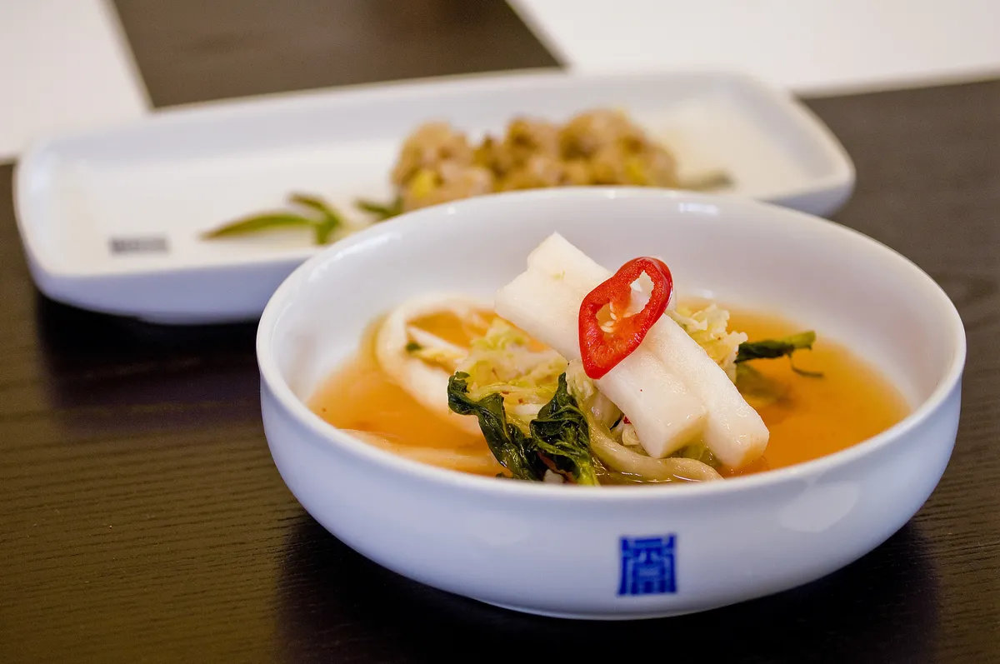

Descubre la vanguardia de la alta cocina en Madrid Fusión, el evento gastronómico más influyente de España y uno de los referentes a nivel mundial. Durante varios días, Madrid se convierte en el epicentro de la innovación culinaria, reuniendo a los mejores chefs, expertos y apasionados de la gastronomía en una experiencia única donde tradición y creatividad se dan la mano.
Madrid Fusión es un congreso internacional de gastronomía que reúne a algunos de los chefs más prestigiosos del mundo, junto a profesionales del sector y amantes de la cocina. Desde su creación, se ha consolidado como un espacio de referencia donde se presentan nuevas técnicas, tendencias y conceptos que marcan el futuro de la cocina.
El evento ofrece una programación muy completa y orientada tanto a profesionales como al público interesado:
Madrid Fusión es un punto de encuentro donde se comparte conocimiento, se descubren ideas innovadoras y se impulsa la evolución de la gastronomía.
Madrid Fusión se celebra cada año en la ciudad de Madrid, concretamente en el recinto ferial de IFEMA Madrid. La edición más reciente tiene lugar durante el mes de enero, reuniendo a miles de asistentes en un espacio preparado para acoger ponencias, exposiciones y actividades gastronómicas de primer nivel.